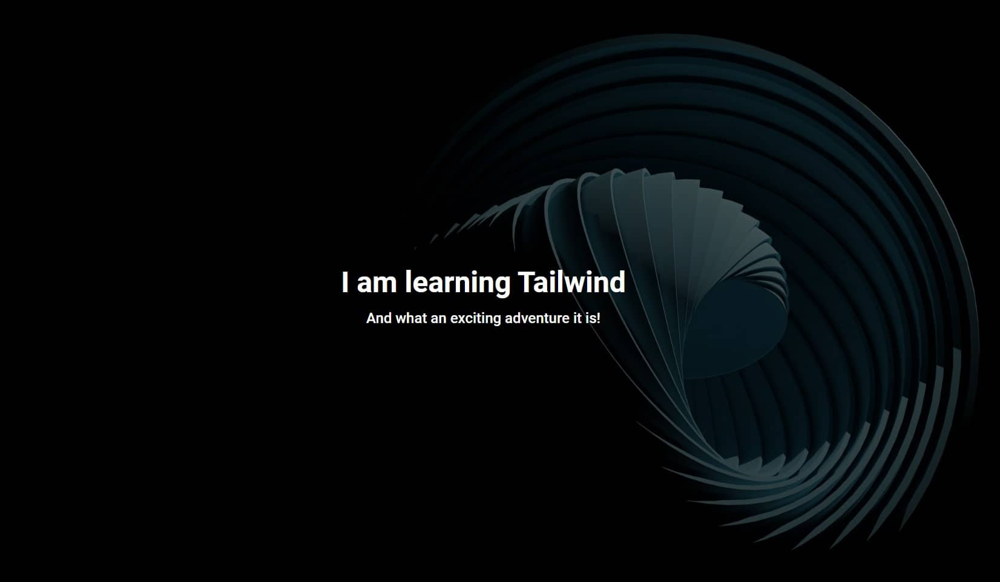
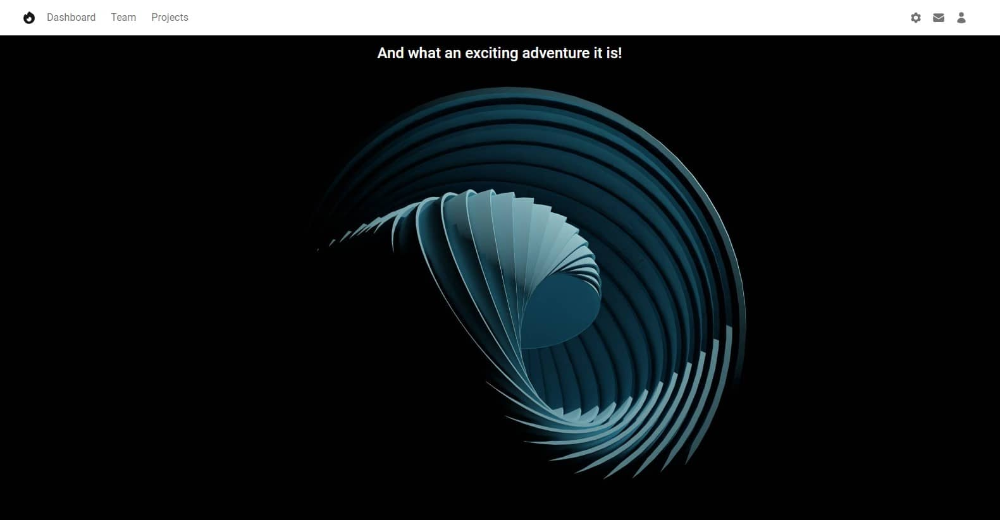
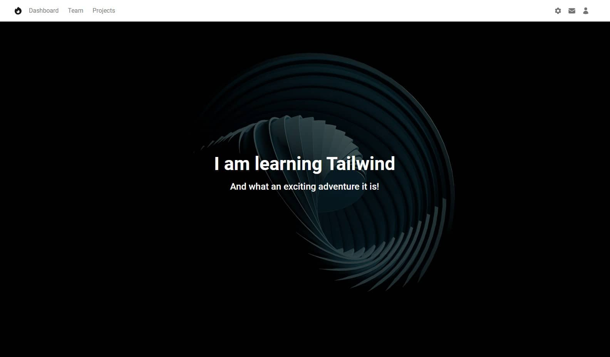

Without mask

Can you see me?
With mask
Can you see me?
The visibility of our Call to action is still very poor.

To increase the contrast, we could use a different, darker background image.
For example, let's change the image to this:

To do this, we need to replace the current image address with the new one in
the url, i.e.
https://mdbootstrap.com/img/new/textures/full/148.jpg
Of course you can use another picture if you don't like this one. Just update the address in the inline CSS added to our Background image section:
Now the visibility of the text is much better, but the graphics are strangely shifted to the right.

Let's center the graphics by using the bg-center class:
Much better, but a problem remains. Relying on graphics alone for visibility is risky. What if we want to use a different graphic? Or if on screens of other sizes the graphics shift and the contrast changes?
We need a reliable, solid solution. And masks will help us with this.
Masks alter the visibility of an element by either partially or fully hiding it. Masks are used to make content more visible by providing a proper contrast. They are most often used on images.
Without mask
Can you see me?
With mask
Can you see me?
We need to add a mask that will cover our entire Hero Image. So it must be added in such a way that it is a child of the Background Image section and at the same time the parent of the Call to action.
So update the Hero Image code as follows:
Our mask is simply a background color added with the help
of the .bg-* class and the arbitrary value in
the form of an hsla color.
We'll talk about hsla colors in detail in the next lesson, but first let's look at the effects of the new code. Looks like our Hero Section is broken!
For some reason, the mask didn't cover the whole image at all, and additionally the text flew to the top of the page.
Fortunately, this is easy to fix.
As you remember, in previous lessons we gave both our Background image and wrapper for Flexbox a class that set their height to the full available space.
We need to do the same with our mask, because currently its height is adjusted to its content - in this case, to the text from Call to action.
So all we have to do is add the .h-full class to the mask and
everything works as it should:
See how the image has become darker, thanks to which the contrast has increased, and our text is now very clearly visible? This is thanks to the mask we use.
